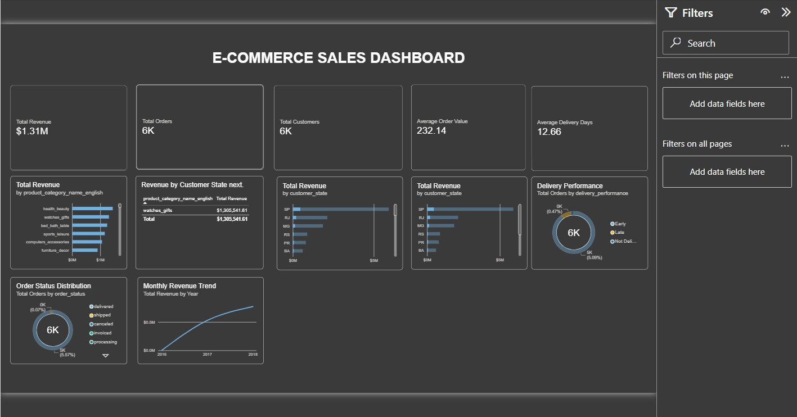

01 / DATA ANALYTICS
E-commerce Sales Analytics
An end-to-end analysis that converts e-commerce sales data into practical business insights.
PythonSQLPower BI
View repository ↗Open to opportunities · 2026
$ whoami
01 / ABOUT ME
I'm a final-year B.Tech Computer Science and Engineering student at KIIT University. I enjoy transforming complex data and technology into meaningful, real-world solutions.
My interests span data science, data analytics, software development, artificial intelligence, and natural language processing.
STUDENT IDCSE / KIIT UNIVERSITY
02 / SELECTED WORK

01 / DATA ANALYTICS
An end-to-end analysis that converts e-commerce sales data into practical business insights.
const resources =
notes + questions;
// study smarter02 / WEB APPLICATION
A resource hub that helps students find notes and previous-year questions in one place.
03 / STUDENT PLATFORM
A student-focused platform for collecting subject-wise notes and exam preparation materials.
New experiments are always in progress.
03 / RESUME
Education, experience, skills, and technical work.
Download CV ↓04 / CERTIFICATES
Professional learning and completed courses.
05 / ACHIEVEMENTS
03 / RESEARCH
$ exploring_ai_for_good
I am interested in building inclusive AI systems and language technologies that can create meaningful social and health impact.
PUBLICATIONS
PAPER / IN PROGRESS
When your paper is published, replace the title, venue, year, and DOI link above. Duplicate the publication card to list another paper.
07 / CONTACT